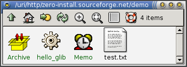

What is it?
The Zero Install system makes software installation not merely easy, but unnecessary. Users run their applications directly from the internet from the software author's pages. Caching makes this as fast as running a normal application after the first time, and allows off-line use.
Show me an example.
Let's say you're looking for a little desktop reminder application. You search Freshmeat.net and find Memo. You open the directory containing Memo (on the remote machine) with your file manager (note the titlebar):

Click on Memo to run it, and it will run. Now, Memo depends on ROX-Lib2, which requires pygtk, with needs python2.2 and GTK+-2, which needs glib, pango, AKT and pkg-config. But that's OK; Memo runs everything it needs directly from the remote machines where they're stored.
The first time you ran Memo, a progress indicator appeared showing the download progress. If you quit Memo and run it again, it will start instantly, because the Zero Install system has cached everything locally.
What about package management systems like APT?
These require a central authority to maintain the database. For example, you can't install Memo using APT, because Debian don't package it. The best an author can do is provide Debian .deb packages on the site. But then the user still has to do the manual dependancy resolution above for everything not in Debian's system.
They are also fragile; if the user deletes managed files then the system may stop working. However, a user can remove any part of the Zero Install cache at any time, and it will simply be fetched again if it's needed later.
Also, a user installing from a .deb, .rpm, etc still has to enter the root password and run a script as root. This is inconvenient and a security risk. Zero Install allows users to run software without root privileges.
See the comparison with other systems document for a more detailed list of the advantages of Zero Install.
Isn't running stuff off the net a security risk?
Isn't that where you get your software from anyway? You're quite free to verify GPG signatures, only use trusted web-sites, etc under this scheme. And since it doesn't run any of the remote code as root, you can try software out safely as a 'guest' user. Once downloaded, the programs are run from the cache, without even checking the original sites for updates (you have to tell it to update manually).
Can I try it out?
Although the system makes installing other software very easy, the Zero Install system itself still requires some work to install. Please read this:
Is it fully working yet?
No, it's still under developement, although the examples given here already work. You can run Memo as shown above, and it will get ROX-Lib via Zero Install. However, the other libraries are not yet in Zero Install, so you will need to install pygtk, etc, as normal for now.
Refreshing currently requires deleting stuff from the cache directory manually. In the finished system, clicking on the filer's refresh button will trigger a refresh. Also, the progress indicator mentioned above could use some work ;-)
Do I have to enter the full URI everytime I want to run a program?
No, create a shortcut to it instead. For example, you could drag Memo from the window above onto a panel or the desktop background, or set it to load when you log in. You can assign a keyboard shortcut to an application, add it to the Send To menu, bookmark it, stick it on a `Start' menu, put it in PATH, make a shell alias or use any other normal method of making something easier to get to.
I have more questions!
Try the FAQ.
More technical readers might want to read the technical information and current status page.